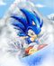

De: La Frikipedia, la enciclopedia extremadamente seria.
De: La Frikipedia, la enciclopedia extremadamente seria. De: La Frikipedia, la enciclopedia extremadamente seria.
|  | Este artículo tiene cosas que solo los garrotas y gamers entienden, así que si no pasas 48 horas diarias jugando, mejor busca otro artículo para leer |
El Touhou es un juego que pertenece a la familia de los danmaku,que significa literalmente "¡yurista, cuyo objetivo es dominar al mundo dejándolo en estado vegetativo for ever and ever la lalala la la.
Reimu, entonces una loli y monja principiante, acaba de mudarse a Gensokyo. Como calida bienvenida por parte de los youkai, estos destruyen su templo. La loli se encabrona y decide que va a sacarles la mierda, pero descubre que aun no sabe como hacerlo, ya que aun no sabe usar los talismanes que usa en los demás juegos y las bombas de esa época eran una reverenda mierda que te dejaba la pantalla pixeleada por unos insufribles segundos. Ni siquiera la muy pelotuda sabe usar la pelota de yin-yang, pero su escaso cerebro deduce que debe usarse pateándolo a los youkai en la cara cual Oliver y Benji. Con esta nueva arma, la loli va a patear unos cuantos traseros, pero es detenida por un yin-yang parlante que puede cambiar de sexo llamado Shingyoku. Tras sacarle la mierda, Reimu puede escoger y dependiendo a donde vaya puede ir a Makai o al Infierno (Que porcierto si no tienes un patch instalado vas a elegir al azar).
Si va a Makai (tambien llamado Pandemonio), que por alguna razón parece una iglesia satánica, viaja peleando contra todo tipo de monstruos fumados, entre ellos una masa de 5 ojos que lanzan rayos laser y juntos forman una loli, una lolita vampiro que si le lanzas bombas se vuelve murcielago y no le hace ni un culo de daño y por ultimo se encuentra con Sariel, un angel de sexo dudoso que quiere matarla porque si, y aunque ya la mataste revive con menos vidas y con música de órganos de iglesia.
Si va al Infierno, pelea contra una fantasma peliverde que en vez de concha tiene colas ectoplastmicas, una luna parlante que en verdad es un plato que robaron a Pedobear ya que tiene grabada la cara de una loli y por ultimo pelea contra Konngara, una demonio cornuda y borracha que te ataca porque le interrumpiste su borrachera y por mas que le ataques, la muy pendeja sigue en plena huasca.
Dependiendo a donde vaya, el final siempre es el mismo, Reimu queda pasada de drogas y alucina que el yin-yang se convierte en un hada que le cumple un deseo. La loli, que ya demostraba tendencias asesinas, pide dulces, dinero y dominar el mundo...venga, lo que cualquiera hubiera hecho, vamos. Sin embargo, el yin-yang malparido se opone a esto y como premio por haberse sacado la mierda, destruye el templo de la loli otra vez.
Otra vez destruyen el templo de la loli Reimu. Esta va a investigar por ahi junto a la tortuga mascota del Maestro Roshi, donde en el camino encuentra a una loli que le excitan los tanques, una samurai machurra (a quien Reimu se intenta coger, venga, que precoz la niñata) y 5 ojetes asesinos. Finalmente descubrimos que la culpable es Mima, la fantasma con las colas ectoplastimas en vez de concha y su puta de turno, Marisa. Antes de pelear contra la fantasma sin concha, Mima suelta los spoilers sobre los yin-yangs que usa Reimu y como usarlos, ademas de que se los quiere robar porque si, pero pierde miserablemente y es sellada otra vez en el templo de Reimu (ya se fugará otra vez, no se preocupen...).
Cabe decir que aqui ya no patea pelotas, sino que aprendió a usar danmaku, pero no el shift, de modo que es facil perder vidas aqui. Y que tras ganar el juego, Marisa queda prendada de Reimu y se une a ella con la excusa de que quiere ser su amiga y le agradan las locas fuertes piromaniacas (eso o buscaba popularidad, pues con la excusa de befriendizar a lo Nanoha logra aparecer en los demás juegos).
Tras ganar, la tortuga le sugiere a Reimu que use los poderes del yin-yang para algo, pues ya no es necesario patearlos a lo Oliver y Benji. Como es loli y por lo tanto idiota, lo usa para tonterías tales como comer azúcar a niveles de caries y no engordar, oler a fresas y perfumarse la concha o transformarse en una neko.
Reimu, Marisa y Mima reciben una invitación a una cueva donde deberán liarse a pelea de gatas con mas lolis locas, entre ellas una princesa esquizofrenica, una maga científica que cree que la magia es una mierda, una poltergeist y una loli cabeza hueca y quien gane entrará a la cueva y recibirá un premio. Cuando quien sea que haya ganado y entra a la cueva, descubre que es una trampa preparada por Chiyuri y Yumemi, dos humanas comunes y corrientes que buscan aprender magia, pero son mas muggles que los de Harry Petas. Quien sea que haya ganado deberá pelear con estas dos locas, que si bien solo son un pobre par de muggles, cuentan con el poder de los cócteles molotov y las bombas atómicas o si pierdes te raptan y te llevan a su planeta a hacerte experimentos y quien sabe que más.
También puedes escoger pelear usando a Chiyuri y Yumemi, pero por alguna razón en el ultimo nivel pelean contra si mismas, con la excusa de que un experimento fallido las clonó. Una ruta muy fumada causada por aspirar puras sustancias nucleares.
Tras ganar, el personaje puede pedir lo que sea como premio y lellas proceden a pedir estupideces. Reimu pide a alguien que le ayude a limpiar el templo, por lo que Yumemi le trae a Multi, la androide loli de ToHeart. Marisa pide un arma nuclear, pero le dan un cohete parlante nuclear que para colmo es tranca de usar. Mima pide que siempre sea de noche para joder a todo el mundo. Las demás personajes de relleno también piden cosas, pero como son idiotas, no las mencionaremos.
No hay nivel extra aqui, pero si hay un epilogo en el que Chiyuri y Yumemi vuelven a su planeta a proclamar que la magia existe, pero son tratadas peor que a Denzel Crocker en Los Padrinos Mágicos y las botan a patadas de ahi.
Reimu se muere de aburrimiento y quiere patear unos cuantos traseros. Al levantar tremendo deathflag, aparecen puros fantasmas a fregarle el templo. La loli los ataca, pero son demasiados, de modo que va a la raiz del problema ya que todos salen de un lago rojo a unas cuadras. Va seguida por Marisa, quien va a robar unas cuantas cosas, pues ya aprendió el arte de robar y mentir de Mima.
Empiezan peleando contra una youkai de relleno a la que ganan fácilmente hasta que llegan a el susodicho lago rojo, donde una vampiro chupa sangre no quiere que se metan al lago. Tras surfear un poco por ahí, llegan hasta México....mentira, solo es una isla en medio del lago donde hay una mansión gigante. Después de pelear contra una de esas odiosas porteras que siempre aparecen en Touhou, te encuentras con Reimu (si juegas con Marisa) o viceversa.
Al final llegas hasta una vieja en pijama llamada Yuuka que primero se enoja porque la despertaste y te ataca dormida y tras despertarse se viste de la nada, decide jugar a las traes y hace que la persigas en un mundo multicolor y mariguanero. Por ultimo te ataca bien despierta usando el pinche puto Master Spark, o sea te lanza un rayo laser desde su paraguas que ocupa media pantalla y que posteriormente la chora de Marisa se roba.
En Gensokyo se ha abierto un nuevo puticlub conformado por demonios. Como les molestaba lo putas que eran, Reimu y Marisa van a Makai, seguidas por Mima y Yuuka, quienes van a desflorar unas cuantas demonios en el camino porque al ser viejas, también se les prendió el sadismo.
En el camino encuentran puras lolis, entre ellas una loli portera con tendencias canibales, una loli turista que tiene los ojos cerrados cual Brock, una loli que le excita atacar con muñecas inflables que lanzan rayos por la concha, dos lolis lesbianas que hacen canciones de hielo y fuego y una sirvienta que no es loli, pero te lanza kunais cual ninja. Por ultimo pelean contra Shinki, la jefaza de Makai y el puticlub en cuestión, a quien deberán vencer. Reimu y Marisa la atacan porque creen que la prostitucion de lolis es mala y Mima y Yuuka le atacan porque Shinki les roba el negocio. Despues de esto, le sacan la mierda a la chula.
Si ganó Reimu, le ordena a la chula que deje de prostituir lolis en Gensokyo. Shinki no le promete nada y al otro dia ordena a las demonios lolis que vayan a prostituirse en casa de Reimu.
Si ganó Marisa, se da cuenta que solo vino a pelear por sadismo y por piromaniaca y porque de la nada quiso ser la nueva diosa de Makai y quitarle el puesto a la chula, pero se dio cuenta que no vale la pena. Sin embargo sus tendencias piromaniacas le sirvieron de algo, pues ahora cada demonio loli que la vea, se caga en las patas y sale corriendo.
Si ganó Mima, la chula le pregunta para que mierda vino y quien carajos es, de modo que la mentirosa compulsiva que Mima es le contesta que es la Monesvol todopoderosa de Gensokyo, pero se aburre de abusar lolis y regresa a Gensokyo. Poco después, decide pelear contra el Monstruo Espagueti Volador y Chuck Norris para ser la nueva diosa todopoderosa suprema de los frikis, pero al final decide que es mejor joder a Reimu que dejar que frikis fapperos la adoren.
Si ganó Yuuka, dice que solo vino a joder a las lolis porque son unas noobs y punto.
Muchos años después de los eventos anteriores, las lolis han crecido y por razones desconocidas Mima las ha abandonado. En eso, una terrible hecatombe amenaza a Gensokyo. Un humo rojo dulce y que seguro es de la buena cubre el sol, por lo que nuestra monja favorita (quien ha crecido y ya no es loli ni idiota) saldrá a investigar la fuente de este mal: la isla flotante con crema. Marisa también irá porque nadie prende un churro sin estar ella presente y porque quiere añadir mas colecciones a su cleptomanía compulsiva.
En el camino encuentran una youkai autista, un hada del hielo que se alucina la Strongest y su putilla hasta que por fin llegan a la mansión Scarlet, de donde viene esa maldita niebla. Obvio que otra de esas porteras hinchapelotas aparece para detenerlas (y esta es encima china), pero no lo logra y entran. Dentro de la mansión encuentran puras locas como una bibliofila asmática y su putilla, una sirvienta que lanza cuchillos como la pendeja de Mystic Square, solo que esta detiene el tiempo, usa relleno en las tetas y hace el Za Warudo. Finalmente dan con la final boss, una vampiro loli llamada Remilia, quien puso la niebla para salir a la calle y que no le afecte el sol, pues a la muy retardada mental no se le ocurrió que existen los paraguas. Obvio que las heroínas se cabrean de que ponga niebla en pleno verano, de modo que la derrotan.
En los finales de Reimu, Remilia va a visitarla a hincharle la paciencia a contarle cuentos de terror mientras hacen yuri. En los finales de Marisa, esta va a robar libros o a desayunar descaradamente en la mansion. Se nota que con Remilia como la dueña de la casa están acostumbradas a aguantar pendejas de la puta madre...
Despues del incidente de la droga en la isla flotante, Gensokyo se encuentra en una temporada invernal perpetua, después de celebrar navidad todos los dias, las chicas se hartan de beber y beber hasta ponerse en cuatro los interminables festejos, asi que Reimu, Marisa y Sakuya deciden investigar. En el camino se encuentran con la Strongest, una neko moe, Alice la loli que jugaba con muñecas inflables de Mystic Square que ya no es loli, un hada que lanza lluvia asesina y tres poltergeists que tienen una banda de new wave. Finalmente llegan a Hakugyokurou y descubriendo que a Yuyuko, una puta chica fantasma y Youmu su guardaespaldas loli se le ha ocurrido robarse la primavera para conservar vivas sus plantaciones de marihuana cerezos y revivir un enorme árbol que mutó por desechos tóxicos (hay que ver que cosas pasan en Gensokyo) porque hay un cadáver sellado ahí que no se lo permite, ignorando la muy imbécil que el cadáver es el suyo propio.
En los finales de Reimu, todas se van de parranda. En los finales de Marisa, se pone a joder la paciencia a las fantasmas o se roba algo. En los finales de Sakuya, la pobre sirvienta sigue cumpliendo los berrinches de Remilia. Cabe mencionar que explotan laboralmente a Youmu en todos los finales.
De la nada hay puras parrandas en Gensokyo y puras fiestas con Happy Hour. Entre ellas están Reimu, Marisa, la sirvienta del Za Warudo, la vampiro loli, la fantasma puta, su putilla guardaespaldas, la librera asmática y la loca por las muñecas inflables. Como las chicas ya están hartas de tanta fiesta, deciden ir a investigar haciéndose interrogatorios y atacándose entre ellas, hasta que todas dan en el templo de Reimu, donde son atacadas por Yukari. Ya que la vieja desgraciada sabe quien es la culpable, pero no quiere decir nada porque aun tiene suficiente resistencia para aguantar mas parrandas.
Si no la derrotan, se van coladitas a su casa a seguir aguantando más parrandas hasta quedar secas. Si la derrotan, la vieja las lleva hasta la culpable, una oni loli borracha llamada Suika, quien quiere hacer parrandas con Happy Hour para que mas de sus parientes vengan, pues están casi extintos. No solo eso, sino que la muy pervertida estuvo espiando a todas disfrazada de niebla.
Tras derrotarla (casi imposible, pues tiene superfuerza, rompe la pantalla y se encoge y se estira, igual que en la foto de la derecha), quien la haya vencido decide que hacer con ella. Reimu le pide "amablemente" que basta de parrandas, Marisa la rapta para usarla como ingrediente secreto para una poción para quitarle lo asexuado a Rinnosuke (uno de los pocos hombres de la serie, como no sale en los juegos no lo mencionaremos) y otras se quedan en shock porque nunca habían visto una oni en su vida. Cosas de ellas...
Gracias a los esfuerzos de nuestras heroinas, Gensokyo ha sido salvado de una temporada navideña perpetua (suerte para Santa Claus, que ya se estaba cansando de llevar regalos), sin embargo, nuestras heroínas no logran ponerse comodas pues una nueva catastrofe se cierne sobre Gensokyo, es de noche las 24 horas. Aqui no solo puedes usar a Reimu y Marisa, sino que tambien puedes usar a la sirvienta adicta al relleno y la fantasma loli. En el camino se encuentran con una luciérnaga travesti, una loli gorrión y una mujer vaca, por mas malpensado que esto ultimo suene.
Por fin logran descubrir lo que ha pasado: la mafia ha llegado a Gensokyo desde la luna y su principal lider, Kaguya Houraisan alias "La Princesa Lunar" ha puesto un puticlub en Gensokyo y para asegurar su exito, ha reemplazado la luna real por una falsa permanente para tener una noche eterna y por ende tener ganancias eternas, por si fuera poco, todo el que mire la luna será hipnotizado y pasara la eternidad en el puticlub de la ya mencionada. Junto a ella estan sus guardaespaldas conejas de Playboy y la chula de Kaguya, Eirin, una tia mas vieja que Matusalén. Esta vez nuestras heroinas y anteriores enemigas se unirán en parejas para ir a ligar echar a la mafia de sus tierras (o por lo menos cobrarles una jugosa parte por lucrar en su plaza).
Si ganan Reimu y Yukari, van de parranda con el elenco. Si ganan Marisa y Alice, van a robar a las mafiosas, pero al final también se parrandean con ellas. Si ganan Remilia y Sakuya, a la vampiro le da una rabieta pues quiere ir a la luna algún dia. Si ganan Youmu y Yuyuko, se pasan de alucinógenos lunares.
Despues de que resolvieran lo de la mafia de la luna, llega la primavera y las Toy Story que controla humos tóxicos y Yuuka, quien ha resucitado de los juegos retro para seguir maltratando noobs. (Y siguen sin resucitar a Mima, carajo...)
Finalmente todas llegan a Higan, que es el Inframundo, con muertos, shinigamis en botes, etc. Las flores resultaron ser producto de fantasmas que dejó escapar Komachi, una shinigami holgazana expulsada del casting de Bleach porue dormía en todas las escenas, que escapa de su estricta y aburrida jefaza. La final boss resulta ser Eiki, la susodicha jefaza aburrida que es una fastidiosa que se lanza a hacer sermones a las personajes, acusándolas de ser unas horribles hijas de puta que se irán al infierno por putas y da consejos que nadie necesita. Cuando las muy retrasadas se dan cuenta de que son fantasmas y que es un evento natural que ocurre cada 60 años, se dan cuenta de que ninguna tiene la culpa y mandan el evento al carajo, al igual que a los discursos hinchapelotas de Eiki.
Una sacerdotisa con más atributos que Reimu llamada Sanae se ha instalado en Gensokyo y amenaza de muerte a Reimu si no cierra su cuchitril de templo, ya que viene a robarle el negocio. Como Reimu no lo va a permitir, va hasta el templo ese. Mientras Marisa tambien va porque quiere patear unos cuantos traseros. En el camino se encuentran con dos diosas del otoño que lanzan camotes y hojas podridas, una diosa de la mala suerte que gira y gira sin vomitar, una loli kappa que se las da de dizque inventora y es racista con los humanos, una de las putas de Aya solo que en vez de cuervo es loba y hasta se encuentran con la propia Aya, quien por una vez en la vida no busca material para su periódico de chismes. Finalmente llegan hasta el templo Moriya, que esta mejor podado que el de Reimu. En el camino se encuentran con Sanae, la misma tía mejor desarrollada que viene a presumir que puede ganar porque es mitad diosa, pero pierde miserablemente. Por ultimo, llegamos hasta la diosa del templo, una serpiente llamada Kanako, quien quiere hacer un culto para ella y que la gente le rece, porque los humanos nipones de afuera ya no creen en las serpientes.
Los finales de Reimu son siempre son los mismos, con Kanako usando sus habilidades mercantiles para que todos vengan a rezarle y dándole consejos a Reimu para que haga lo mismo.
Mientras que en los finales de Marisa no roba ni hace las pendejadas de siempre, sino que tambien Kanako aprovecha para hacerle sermones a ella.
De la nada el clima empieza a cambiar cada 10 segundos en Gensokyo y un terremoto destruye el Templo Hakurei. Reimu se cabrea y decide ir a investigar al igual que las demás. Junto a Marisa, Sakuya, la vampiro loli, la fantasma puta, su putilla guardaespaldas, la librera asmática, la loca por las muñecas inflables, la pajarraca chismosa, la oni borracha, la coneja Playboy, la shinigami vaga y la vieja de las barreras y bordes deciden ir a investigar haciéndose interrogatorios y atacándose entre ellas, hasta que todas llegan hasta la montaña mas alta, donde una mantarraya parlante llamada Iku trata de advertirles quien está provocando esto, pero las muy putas creen que ella es la final boss y la derrotan.
Finalmente tras escalar mucho, llegan hasta el cielo, donde se encuentran con una puta berrinchuda con Síndrome de Sakura Haruno llamada Tenshi Hinanawi. Como la vida en el cielo es dormir, parrandear y rascarse el culo las 24 horas, Tenshi se mató de aburrimiento y quiso causar un desastre como los que ocurren en Touhou por diversión y para que todos le hagan caso. Obvio que todas se encabronan por semejante idiotez y le sacan la mierda a esta puta plana, que tiene el poder de controlar los terremotos usando un consolador gigante que hace que vibre la tierra llamado Espada de Hisou.
En todos los finales ocurre lo mismo, Reimu lloriquea por su templo destruido y Tenshi tiene un berrinche pues es masoquista y quiere que Reimu la venza y le patee el trasero. En el final de Tenshi todas obtienen su venganza contra la puta esta y mas tarde celebran fiesta como si nada. Lo malo es que a Suika le gustó la idea de un lugar en el que no se hace nada y se metió de colada a vivir en el cielo y gastarse la dotación de tragos y otras bebidas alcohólicas de Tenshi.
Luego de que al fin todo los problemas de momento han sido resueltos, un dia de nieve, mientras nuestra señora axilas favorita de siempre jugaba con Cirno y los demas, se abre un gigantesco agujero al más allá, y entonces, este suceso hará que alguna de las heroínas se embarque(porque el resto de Gensokyo es tan perezoso como IP anónima), junto con algún acompañante (porque no tienen nada mejor que hacer) irán a investigar ese misterioso y profundo gran hoyo, en dirección a la casa de la mamá de IP anónima un sol subterráneo.
En las profundidades viven todos los monstruos y espíritus basheados, y se encuentran a puras lunáticas, entre ellas una araña que controla las plagas, una diosa de la envidia, envidia envidia me tienen envidia, me tienen envidia; una oni como Suika, solo que con más atributos y una autista atorrante que lee las mentes.
La autista revela que las culpables son sus mascotas, una gata necrofilica y una cuervo bruta que absorbió un sol subterráneo y se hizo tan poderosa que se hizo piromaniaca.
Un día muy normal todo iba bien hasta que apareció un barco en el cielo lo que es ilógico porque los barcos no pueden volar, pero esto es el jodido Gensokyo, donde la lógica es tan importante como IP anónima. Aparte del barco mágico aparecen uno ovnis de colores que recuerdan a cuando te metes LSD y que cuando juntas 3 en la cosita de abajo transparente esa cosa no, mamón.. sale un ovni del tamaño del ojo izquierdo de Unzan qué se roba todos los objetos y luego te los mete por el culo y se los lleva a una tierra muy lejana.
Reimu va a investigar porque no tiene nada mejor que hacer, Marisa va a investigar porque NADIE prende un churro sin ella, y Sanae va a investigar porque le ha estado haciendo favores sexuales a ZUN sin qué Suwako y Kanako sepan, y por eso aparece tanto en los juegos.
Al final llegan hasta Makai, pero no, Shinki no está y no aparece. Sino que ahora en su lugar está Byakuren, una especie de Jebús a quien las del bote quieren salvar.
Dos juegos tontos en los que juegas tomando fotos a los ataques de los oponentes sin que te maten en el intento y mueras achicharrado.
En Shoot the Bullet, Aya hace su rutina diaria de tomar fotografías comprometedoras al casting desde Embodiment of Scarlet Devil hasta Phantasmagoria of Flower View. Afortunadamente, Reimu y Marisa logran escapar del paparazzi.
En Double Spoiler, una tengu de relleno llamada Hatate decidió que quería tener la misma popularidad que su colega Aya. Para eso, crea su propio periódico y se viste a un look estilo emo para ser popular. Como a los de Gensokyo les llegó al carajo, Hatate se va por ahí acosando a Aya y viendo como toma fotos y se busca peleas de gatas por ahí para aprender los secretos de su popularidad, tomando fotos al casting desde Mountain of Faith hasta Undefined Fantastic Object. Al final del juego descubre lo que ya todos los fans sabíamos antes que ella: que Aya es popular por ser metiche, cockbloquer y puta, de modo que tras muchas fotos y muchas lolis cabreadas de que estas pinches tengus no respeten su privacidad; Aya y Hatate se meten en una pelea de gatas en la que sale victoriosa la mas puta.
Tras esto, puedes desbloquear a Hatate, quien decide arriesgar el pellejo y las plumas para tomar fotos comprometedoras en acción.
Un dia unas nubes de humo azul empezaron a irse al templo de Byakuren. Reimu y Marisa van a investigar como siempre, a lo que Sanae y Youmu se unen a la pandilla, ya que le hicieron favores a ZUN para que les deje ser personajes jugables. En el camino se encuentran con Yuyuko, la fantasma gorda esa, quien las trollea un poco y les dice que vayan al templo de la monja youkai Jesus, ya que ahí es donde van los fantasmas.
En el templo son atacadas por una youkai que lanza ecos y grita frases de Justin Biebergas y Kogasa, la paraguas morada esa, quien está de regreso y te pide ayuda porque una zombie se la quiere violar, pero las muy perras de las heroínas se la pagan atacándola hasta sacarle la mierda. También encuentran a la susodicha zombie y a su chula, una china. Hasta que descubren un cementerio escondido bajo el templo, donde hay una puerta escondida que da lugar a un mausoleo escondido (carajo con las sorpresas, gracias Kogasa). Ahi dentro son atacadas por unas putillas que esperan a su príncipe. Donde los fantasmas se reúnen para ver la resurrección de el susodicho príncipe.....ah no, no es un príncipe, es Jebús...ah no...espera. No es Jebús, es Miko, una loli con complejo de Saber con el poder de oir diez orgasmos a la vez.
En el final de Reimu, Miko se aparece en su templo tras salir por un agujero cual Diglett (porque es de lo mas normal aparecerte por agujeros) e invita a Reimu a su mausoleo, ahora convertido en burdel. En el final de Marisa, esta le pregunta a Miko como carajos puede oír diez orgasmos a la vez, pues se quiere robar hasta los orgasmos. En el final de Sanae, esta reconoce que Miko es el viejo feo que aparece en el billete de 10,000 yenes y que las putillas de Miko son dos viejas feas que aparecen en su libro de historia de primaria. En el final de Youmu, es trolleada y explotada laboralmente por Yuyuko, como siempre.
Una coleccion de 66 mascaras se transforma en un youkai, una pelirrosa plana y problematica llamada Sakura Haruno Hata no Kokoro. Esta no tiene expresiones, de modo que para hablar necesita usar emoticones, codigo morse y sus 66 mascaras. Sin embargo, un dia se le pierde la mascara de la esperanza y todos en Gensokyo se vuelven emos, de modo que Reimu, la budista Byakuren y Miko tienen que arreglarlo mientras tienen una guerra de quien tiene la religion mas grosa. Al final Kokoro nunca encontró su mascara (que habia sido robada por la autista de Koishi) pero tuvo que aprender a sonreir y enojarse sin usar sus chucherías.
Todo está en paz en Gensokyo, hasta que de repente un día desde los consoladores hasta las muñecas inflables empiezan a cobrar vida. Los consoladores de Reimu y Marisa empiezan a atacan y violar todo a su paso porque si mientras que el cuchillo de Sakuya ha rebanado más locos que Shiki Tohno. Como ellas no están dispuestas a que los objetos hagan solo el trabajo van a investigar por ahí, llegando a un castillo de agujas donde vive una tía con un fetiche por poner todo al revés y una enana que le excita encoger y agrandar pollas.
Medio Gensokyo busca a Seija (la del fetiche por poner todo de cabeza) viva o muerta por lo ocurrido en el juego anterior. Sin embargo, la loca vino preparada al robarse las armas de varios personajes, entre ellos los yin-yang de Reimu, la camara de Aya, el paraguas de Yukari, el mazo de Sukuna, etc. De modo que usando estos items robados deberá pelearse con todo el casting.
Las Lunarians (incluidas las perras de las hermanas Watatsuki) se han metido de coladas a Gensokyo porque las han invadido, de modo que Reimu, Marisa, Sanae y la coneja playboy Reisen deben investigar. En el camino se encuentran con conejas playboy, una youkai que hace pesadillas (y es una pesadilla derrotarla aunque este en el Nivel 3) hasta que llegan a la Luna. En la Luna se encuentran con Sagume Kishin, una diosa que tiene el poder de la loca de Seija pero peor: lo que diga se contradice y por eso debe andar por ahi tapandose la boca. Esta les dice que un hada usando la bandera de Gringolandia y una vieja emo vengadora tienen la culpa de todo y las manda para alla. Ahi se encuentran con Clownpiece, el hada que usa la bandera de Gringolandia. Hasta que Reimu y compañia encuentran a la culpable de que las Lunarians se quedaran sin casa, Junko Enoshima la vieja emo vengadora. Resulta que la diosa china lunar, Chang'E, mató a su hijo y esta buscar venganza y Chang'E esta en la Luna. Obvio que Reimu no esta de humor para dramas telenovelescos y la derrotan.
Autor(es):